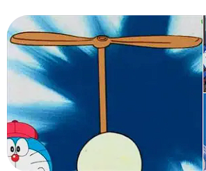
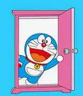

タケコプター
頭につけるだけで、空を自由に飛ぶことができる道具です。時速80キロメートルで、3時間続けて飛ぶことができます。

どこでもドア
行きたい場所を頭の中で思い浮かべながらドアを開けると、どこにでも一瞬で移動することができる、とても便利な道具です。
タイムマシン
過去や未来へ、時間を超えて自由に移動できる道具です。のび太くんの勉強机の引き出しの中に入り口があります。

頭につけるだけで、空を自由に飛ぶことができる道具です。時速80キロメートルで、3時間続けて飛ぶことができます。

行きたい場所を頭の中で思い浮かべながらドアを開けると、どこにでも一瞬で移動することができる、とても便利な道具です。
過去や未来へ、時間を超えて自由に移動できる道具です。のび太くんの勉強机の引き出しの中に入り口があります。